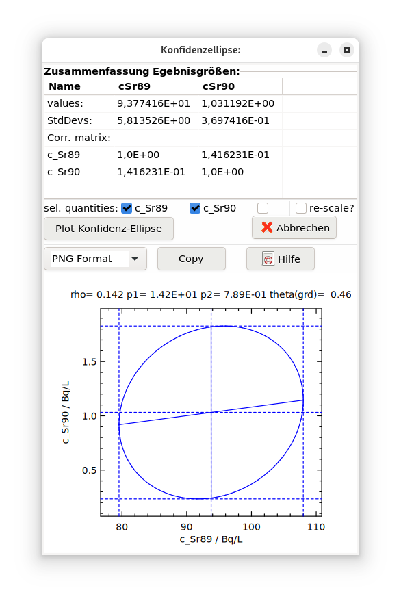
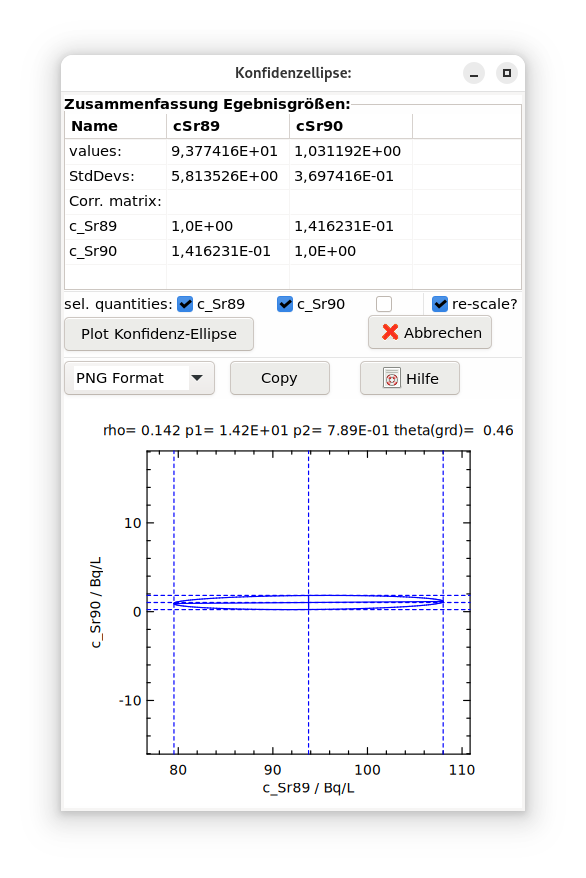

4.8. Konfidenz-Ellipsen¶
Die Darstellung einer Konfidenz-Ellipse kann über das Hauptmenü „Optionen – Berechne Konfidenz-Ellipse” aufgerufen werden.
Konstruktion der Ellipse
Die Konstruktion einer Konfidenz-Ellipse eines Paares von Ergebnisgrößen kann nach dem GUM Supplement 2 wie folgt skizziert werden.
Zunächst wird die Kovarianzmatrix U~y~ zweier Ergebnisgrößen ermittelt. Für letztere, hier als y*~1~ und *y*~2~ bezeichnet, besteht ihre Kovarianzmatrix **U~y~* aus den Diagonalelementen \(u^{2}\left( y_{1} \right)\) und \(u^{2}\left( y_{2} \right)\) sowie den identischen nicht-diagonalen Elementen \(\rho\ u\left( y_{1} \right)u\left( y_{2} \right)\), mit dem Korrelations-Koeffizienten \(\rho\).
Für die untere Dreiecks-Matrix L der Cholesky-Zerlegung von Uy, angedeutet durch Uy=L LT, werden mit der Jacobi-Methode die Eigenwerte d berechnet.
Die Längen a der Halbachsen der Ellipse und der Winkel θ , den die Hauptachsen der Ellipse bezüglich der Koordinatenachsen haben, ergeben sich aus den Gleichungen
\(a_{j} = \sqrt{d_{j\ }\chi_{(1 - \gamma);2}^{2}}\) , j =1,2
\(\theta = {\frac{1}{2}\tan}^{- 1}\left( \frac{2\rho\ u\left( y_{1} \right)u\left( y_{2} \right)}{u^{2}\left( y_{1} \right) - u^{2}\left( y_{2} \right)} \right)\)
wobei \(\chi_{(1 - \gamma);2}^{2} = 5.99146\) das (1-γ)-Quantil der Chi-Quadrat-Verteilung mit 2 Freiheitsgraden ist.
Grafische Umsetzung
Die nachfolgende Grafik zeigt im linken Bild eine solche Konfidenz-Ellipse. Diese entspricht noch nicht dem gewohnten Bild einer Ellipse, da die Hauptachsen der Ellipse nicht senkrecht aufeinander stehen. Dies ist darauf zurückzuführen, dass die beiden Koordinaten-Achsen unterschiedlich skaliert sind. So sind 5 Skaleneinheiten der beiden Koordinatenachsen im Bild unterschiedlich lang.
 Abb. 4.8.1 beide Achsen haben unterschiedliche Skalen¶ |
 Abb. 4.8.2 re-scale: beide Achsen haben gleiche Skalen (5 Skalenteile haben auf beiden Achsen dieselbe Länge)¶ |
Diesen Nachteil kann man beseitigen, indem diese gleichartig skaliert werden. Dies erreicht man, durch folgende Re-Skalierung (im GUM Supplement 2 ist die Verwendung unterschiedlicher Skalierungen vermieden worden):
\(u\left( y_{1} \right)\ \leq u\left( y_{2} \right)\) : \(y_{1} \rightarrow y_{1}\frac{u\left( y_{2} \right)}{u\left( y_{1} \right)}\) ,
or
\(u\left( y_{2} \right)\ \leq u\left( y_{1} \right)\) : \(y_{2} \rightarrow y_{2}\frac{u\left( y_{1} \right)}{u\left( y_{2} \right)}\) .
Zur grafischen Darstellung werden zunächst die Punkte der Ellipsenkurve unter der Voraussetzung berechnet, dass der Ursprung der Ellipse im Koordinatenursprung liegt und der Winkel der Ellipsenachsen bezüglich der Koordinatenachsen null ist. Diese Punkte werden dann mit einer Koordinatentransformation, die sich aus einer Translation und einer Drehung zusammensetzt, auf die endgültige, aber re-skalierte, Form gebracht und geplottet wird.
Die obige Abbildung zeigt im rechten Bild die re-skalierte Form der Ellipse; ihre Achsen stehen jetzt senkrecht aufeinander. In beiden Bildern sind die Intervalle
\(y_{j} \pm u\left( y_{j} \right)\sqrt{\chi_{(1 - \gamma);2}^{2}}\)
als gestrichelte Geraden eingezeichnet.
Literature:
JCGM 102:2011 (GUM Supplement 2, 2011)
Brandt, S., 1999, Kapitel 5.10 und A.12
Press et al., 1992, chapter 11.1
Thompson, M.A., 2015: Gaussian Statistics Lecture.
Hoover, 1984